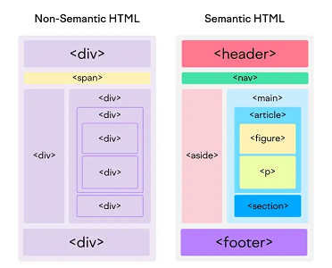

HTML SEMANTICO
A diferencia del HTML no semántico, que utiliza etiquetas que no transmiten directamente su significado

Las etiquetas HTML semánticas, proporcionan información adicional a los buscadores sobre la funcionalidad e importancia de las secciones de tus páginas.
Algunas ventajas de usar HTML semántico
- Son más fáciles de leer
- Mejoran el SEO
- Facilitan el mantenimiento del código